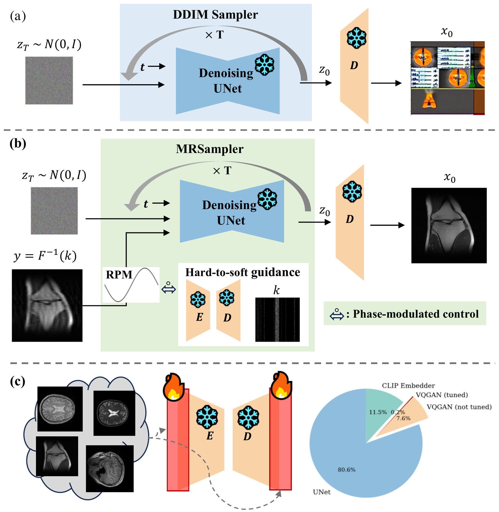
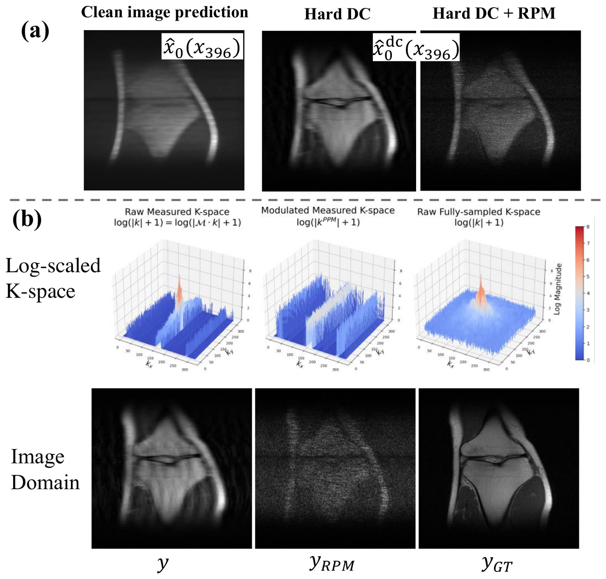
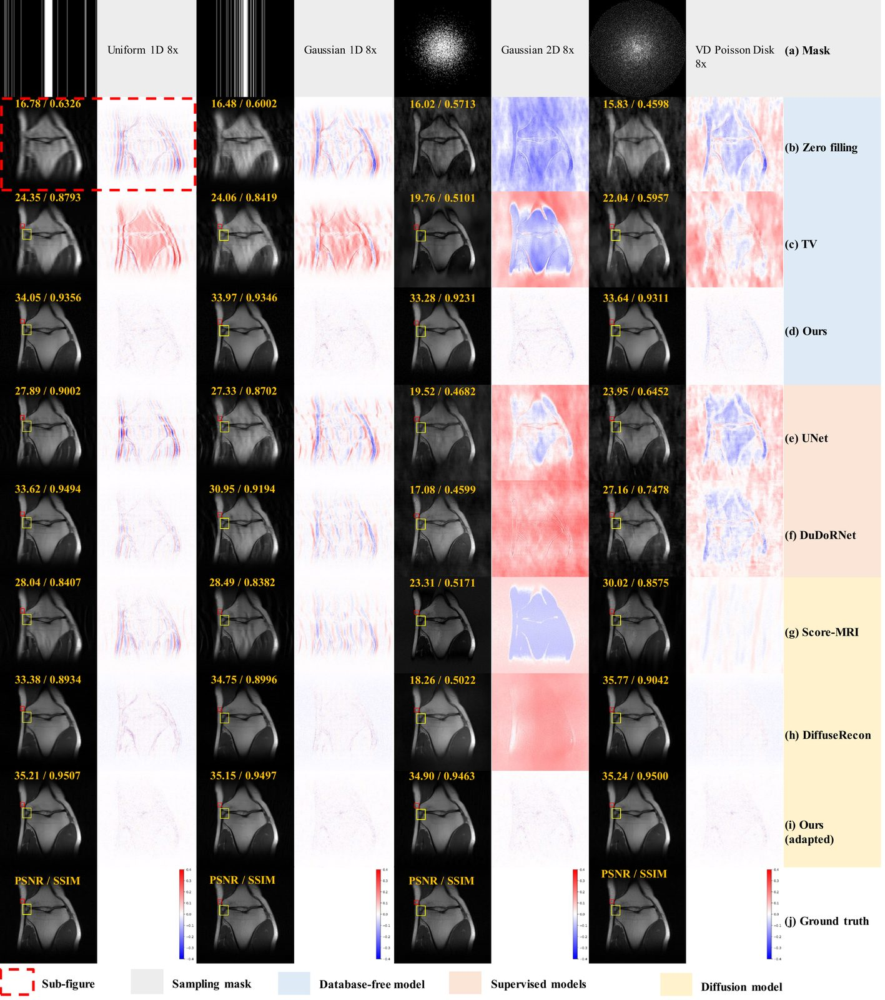
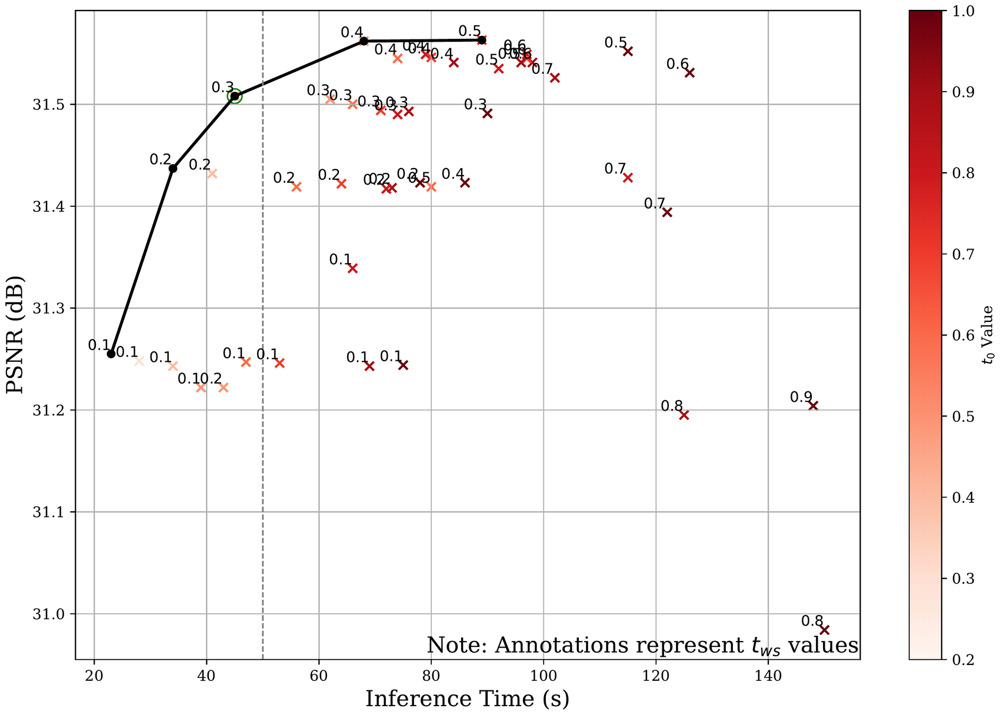
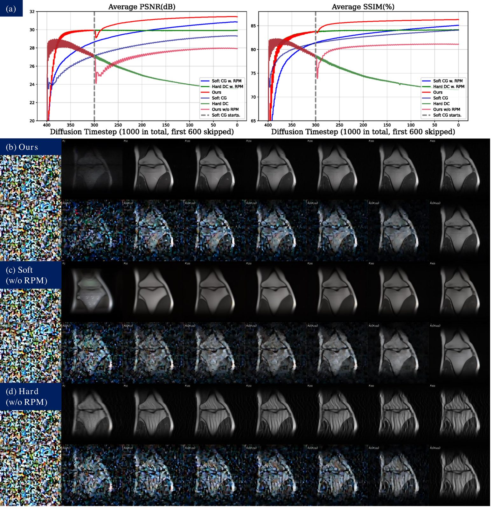

arXiv 2024 · MRI RECONSTRUCTION / LATENT DIFFUSION / FOUNDATION MODEL
提示大规模隐扩散模型做欠采样 MRI 重建
MRPD: Undersampled MRI Reconstruction by Prompting a Large Latent Diffusion Model
MRI 扩散模型能训的数据只有几千到几万例，而 Stable Diffusion 见过数十亿张自然图像。这篇论文要回答两件事：自然图像里的「视觉常识」对 MRI 是否也成立？如果成立，怎么在不重训大模型的前提下把它变成可用的 MRI 重建器——而且换采样、换对比度、换器官都还能用。
- 原文
- arXiv:2402.10609v2（2024-07-05，IEEE TMI 排版稿件，约 10 页）
- 发表状态
- arXiv 预印本（源码为 IEEE Transactions on Medical Imaging 模板；本页只陈述原文内容）
- 规模
- 7 节 · 5 图 · 9 表 · 4 个编号公式 · 1 个算法 · 71 条文献
本页是 arXiv:2402.10609v2（2024-07-05）的中英文全文对照翻译，公式、表格数字与图注均按 arXiv LaTeX 源码逐项核对；正文引用保留原文的作者-年份形式，文末按原文参考文献表（IEEE 引用顺序）编号 1–71。图中文字保留原文，未重绘；网页图片由源码目录中的矢量图（fig_new/*.pdf）转成 PNG/JPEG 并缩放，不是 PDF 原像素的逐位副本。原文没有附录，本页覆盖摘要、全部 7 节、5 张图、9 张表、算法 1、6 条脚注与全部参考文献，无删节。所有额外讲解均标为「译者注」，与原文分开。
原文：arXiv 摘要 ↗ · 原文 PDF ↗ · 官方代码 ↗ · 返回论文条目 →
读之前，先分清三条线索
这一段是译者注，不是原文。它只做一件事：让你在读到算法 1 与公式 (1)–(4) 时，知道每个量在做什么。
- 前向模型（公式 3）：测量写成 。掩膜 决定采了哪些 k 空间线， 是多线圈敏感度；单线圈时 退化为单位矩阵。所谓「重建」就是只拿 内的那部分 去猜完整图像。
- 先验从哪来（3.2 节）：MRPD 不训练 MRI 扩散模型，而是用 Stable Diffusion v1.5 的去噪 UNet 当图像先验；推理时用确定性 DDIM（）逐步去噪，中途把 k 空间保真项塞进去。
- 两种「塞法」（3.2.1 节）：硬 DC 直接把测得的 k 空间写回（收敛快但易出混叠），软 CG 用测量损失的梯度修（图像干净但过度平滑）。MRPD 前段用硬、后段用软，中间靠 RPM 篡改相位来注入噪声、抹平频率偏置。
术语速查（译者注）
- LLDM
- 大规模隐扩散模型（large latent diffusion model）。本文的实例是 Stable Diffusion v1.5：VQGAN 自编码器把图像压到隐空间，去噪 UNet 在隐空间工作，CLIP 编码文本。
- DDIM
- 去噪扩散隐模型采样器。确定性版本每步只做一次「预测 + 重新加噪」，步数少、可跳步。
- 硬 DC / 软 CG
- 数据一致性（data consistency）与分类器引导（classifier guidance）。前者是投影式替换，后者是把测量损失对隐变量的梯度加进采样更新。
- RPM
- 随机相位调制（random phase modulation）。把图像相位换成「原相位 + 随机相位」的线性组合，等价于全局注入一种可分离噪声并压低低频主导。
- /
- 起始时间步比例（跳过早段扩散）与分水岭时间步比例（在此之后从硬 DC 切到软 CG）。
- MRAdapter
- 只微调 VQGAN 自编码器首末卷积层的适配器，约占整个 LLDM 参数的 0.2%。
- In-D / OOD
- 域内 / 域外。本文的 OOD 指训练时没见过的采样掩膜、对比度（如 IXI 脑）与器官（膝 → 脑）。
两处原文数字的读法（译者注）
2.1 节写 LAION-5B「由 585 万自然图像-文本对组成」，而 LAION-5B 本身是 58.5 亿量级的图文对；本页按原文照译，未改动数字，读者引用时请以原文与数据集官方说明为准。
3.2.1 与 3.2.2 节关于图 5 的 (c)/(d) 指代互换了，本页在两处都保留原文说法，并在 3.2.1 节后加了译者注说明。
摘要
English original
预训练于自然图像的大规模隐扩散模型（large latent diffusion model, LLDM）所含的隐式视觉知识十分丰富，并且被假设对自然图像与医学图像普遍适用。为从实践角度检验这一假设，我们提出了一个用于欠采样 MRI 重建的新框架——通过提示大规模隐扩散模型实现欠采样 MRI 重建（MRPD）。现有方法多在 MRI 数据集上训练，对不同数据采集场景的泛化能力通常有限；MRPD 则支持无监督且普遍自适应的 MRI 重建。在无监督重建中，MRSampler 以随机相位调制的「由硬到软」控制引导 LLDM。给定任意单来源或多来源 MRI 数据集，MRPD 的性能都会因一个仅微调 LLDM 自编码器的轻量 MRAdapter 而得到普遍提升。在 FastMRI 与 IXI 上的实验表明，MRPD 是唯一同时支持「无 MRI 数据库」与「有 MRI 数据库」两种场景的模型，并在域外（out-of-domain, OOD）采样、对比度与器官上，于所比较的无监督、监督与 MRI 扩散方法中取得最佳泛化性。据我们所知，MRPD 是第一个在实证上展示「在海量自然图像上预训练的 LLDM 对 MRI 具有普遍效力」的方法。我们的官方实现见 https://github.com/Z7Gao/MRPD。
English original
1 引言
English original
磁共振成像（MRI）以安全性著称，是临床诊断的基石。包括 加权（-w）、 加权（-w）与质子密度加权（PD-w）在内的多种高对比度 MRI，使全面的影像学评估成为可能。然而，受固有的物理与生理约束，MRI 采集速度慢，限制了其临床效率（Lustig 等，2008）。
English original
为此，人们发展了以欠采样采集为基础的加速 MRI 技术，其中最著名的包括压缩感知（compressive sensing, CS）（Lustig 等，2008；Haldar 等，2011；Patel 等，2011；Liang 等，2009；Block 等，2007）、并行成像（parallel imaging, PI）（Griswold 等，2002；Pruessmann 等，1999），以及近来的深度学习（deep learning, DL）趋势（Wang 等，2016；Jin 等，2017；Zhu 等，2018；Qin 等，2018；Schlemper 等，2017；Eo 等，2018；Putzky 等，2019；Cheng 等，2019；Huang 等，2022；Yang 等，2017；Quan 等，2018）。
English original
近来，MRI 扩散模型（DM）（Song 等，2021；Peng 等，2022；Chung 与 Ye，2022；Jalal 等，2021；Güngör 等，2023；Ozturkler 等，2023a；Cao 等，2024；Korkmaz 等，2023；Huang 等，2023；Ozturkler 等，2023b）已成为可与最先进监督方法相竞争的一类方法（Zhou 与 Zhou，2020；Guo 等，2023）。它们不依赖与特定采样模式绑定的判别式目标，而是以与采样无关的方式训练扩散模型来逼近 MR 图像的分布。Score-MRI（Chung 与 Ye，2022）已展示出在多种器官与对比度上显著的泛化能力。然而，当前 MRI 扩散模型（Song 等，2021；Chung 与 Ye，2022）的训练数据规模通常在数千到数万个样本之间，而且由于隐私问题，构建大规模 MR 图像数据集依然困难（Wang 等，2023）。与此并行，大规模隐扩散模型（LLDM）（Podell 等，2023；Rombach 等，2022）——以 Stable Diffusion（SD）为代表的一类革命性生成式基础模型——是在海量互联网规模图像上训练的（Schuhmann 等，2022），其规模约为用于训练 MRI 扩散模型的现有公开 MRI 数据集（Knoll 等，2020；Zbontar 等，2018）的 倍。SD 模型能够生成多样且高保真的图像，并已被证明是配合监督微调的强大骨干（Zhao 等，2023；Xu 等，2023；Yang 等，2023；Ke 等，2024）。这些事实意味着 LLDM 中蕴含丰富的视觉知识，并引出我们的问题：（Q1）在自然图像上预训练的 LLDM 所含的隐式视觉知识，是否对自然图像与医学图像都普遍适用？（Q2）如果答案是肯定的，如何把它利用起来，提升欠采样 MRI 重建模型的自适应性与泛化性？鉴于 LLDM 的广泛适用性，我们假设存在通用的视觉知识，并且可以把它用于 MRI 数据。为从实践角度回答第一个问题，我们针对第二个问题给出一个解决方案——MRPD。
English original
作为计算机视觉中最相关的研究方向，基于扩散模型的逆问题求解器（DIS）利用预训练的扩散先验执行条件后验采样。大多数 DIS 关注像素域（Kadkhodaie 与 Simoncelli，2021；Kawar 等，2022；Wang 等，2023a；Feng 等，2023；Chung 等，2023；Chung 等，2022；Song 等，2023a；Song 等，2023b），只有少数工作探讨它们在隐域中的有效性（Rout 等，2023；Song 等，2024；Kim 等，2023）。此外，多数研究集中于使用域内数据的像素域求解器，尚未探索复值图像复原。在此背景下，我们研究一个极具挑战性的组合：对极端域外（OOD）且复值的数据执行隐扩散模型采样。
English original
在本工作中，我们提出一个无监督且普遍自适应的欠采样 MRI 重建框架，称为通过提示预训练隐扩散模型实现的欠采样 MRI 重建（MRPD）。通过提示一个在数十亿自然图像上预训练的 LLDM，MRPD 以无监督且普遍自适应的方式从欠采样 k 空间数据中恢复全采样图像。具体而言，我们为复值 MRI 图像量身定制的 MRSampler 允许免训练的扩散推理，并引入新的「由硬到软」一致性引导与随机相位调制。我们的 MRAdapter 是一种高效的 LDM 微调技术，它只精修 LLDM 的数据接口——自编码器，而不是大型去噪 UNet。给定任意单来源或多来源 MRI 数据，MRAdapter 都能普遍提升重建能力并保持泛化性。我们在真实仿真数据集以及复值单线圈与多线圈数据集上评估 MRPD。与其它现有深度学习方法相比的优势列于表 I，主要贡献如下：
English original
据我们所知，MRPD 是第一个成功为医学成像逆问题（尤其是加速 MRI）从在海量自然图像上预训练的 LLDM 中提取隐式视觉知识的工作。
English original
To our knowledge, MRPD are the first to successfully retrieve the implicit visual knowledge in an LLDM pre-trained on vast natural images for medical imaging inverse problems, particularly accelerated MRI.MRPD 使用 MRSampler 以无监督方式引导 LDM。可选地，一个高效的 LDM 自编码器适配器 MRAdapter 使其能够以普遍且与采样无关的方式利用任意可获得的 MRI 数据集。
English original
MRPD uses an MRSampler for guiding LDMs in an unsupervised way. Optionally, an efficient LDM autoencoder adapter, MRAdapter enables utilizing any available MRI dataset in a universal and sampling-agnostic way.在包括采样、器官与对比度在内的多种域内（In-D）与 OOD 条件下的广泛评估表明：与流行的无监督、监督与 MRI 扩散方法相比，MRPD 在自适应性与泛化性上均取得显著提升。
English original
Extensive evaluations under various in-domain (In-D) and OOD conditions including samplings, organs, and contrasts show that MRPD achieves prominent improvements in both adaptability and generalizability over popular unsupervised, supervised, and MRI diffusion methods.
English original
| 特性 \ 模型类型 | 监督模型 | INR | 扩散模型 | MRPD |
|---|---|---|---|---|
| 与采样无关的模型。 | × | ✓ | ✓ | ✓ |
| 对大规模数据的利用。 | ✓ | × | ✓ | ✓ |
| 对无数据库场景的适应性。 | × | ✓ | × | ✓ |
| 对 OOD 器官与对比度的泛化性。 | 通常较差 | ✓ | 一般 | ✓ |
表内符号按原文转录：✓ 表示具备该特性，× 表示不具备。原文未给出定量数值。
2 背景与相关工作
English original
2.1 扩散模型
English original
扩散模型（DM）（Ho 等，2020；Dhariwal 与 Nichol，2021；Song 等，2021）是一类无条件生成方法，它把高斯分布变换为经验数据分布。前向过程是一个马尔可夫过程：按照固定的噪声计划逐步向干净图像 加入高斯噪声，在第 步得到中间含噪的 。逆向过程则使用一个预训练的神经网络，即去噪函数，逐步对 去噪。为降低计算负担，人们提出了隐扩散模型（LDM）（Rombach 等，2022）：它先把数据嵌入维度更低的隐空间，再学习去噪函数。LLDM（Rombach 等，2022；Ramesh 等，2021；Saharia 等，2022）是在互联网规模数据集上训练的一类 LDM。图 1 展示了 Stable Diffusion（SD）（Rombach 等，2022）v1.5 的组成：它以 CLIP（Radford 等，2021）作文本编码器，在由 585 万自然图像-文本对组成的 LAION-5B 数据集（Schuhmann 等，2022）上训练自编码器 VQGAN（Esser 等，2021）与隐图像生成器（去噪 UNet）。隐式视觉知识存在于去噪 UNet 中。
English original
给定预训练的去噪函数，扩散采样器被设计用来满足特定需求，同时让中间图像保持在正确的含噪数据流形上；否则生成图像会遭受强烈的混叠（Chung 等，2022）。去噪扩散隐模型（DDIM）采样器（Song 等，2021）是 MRPD 的骨干：它能以很少的逆向步数生成高质量样本，非常适合时间敏感的逆问题。扩散过程被定义为一个非马尔可夫过程：在每一步 ，干净隐图像 通过下式预测：
English original
其中 是预训练的去噪函数， 表示噪声计划。然后它通过下式从 采样 ：
English original
是时刻 高斯噪声的标准差，控制扩散过程的随机性。我们对 LLDM 使用确定性 DDIM 采样器（）。
English original
2.2 用于 MRI 重建的扩散模型
English original
开创性工作（Song 等，2021；Peng 等，2022；Chung 与 Ye，2022）把扩散模型引入欠采样 MRI 重建，并报告了高质量且与采样无关的重建性能（Chung 与 Ye，2022）。近期工作还在自监督学习（Korkmaz 等，2023）与推理加速（Ozturkler 等，2023b；Chung 等，2022b；Cao 等，2024）方向上探索基于扩散的 MRI 重建模型。两篇值得注意的论文（Güngör 等，2023；Ozturkler 等，2023a）致力于缓解预训练扩散模型的分布偏移。AdaDiff（Güngör 等，2023）用数据一致性损失微调一个预训练的快速对抗扩散模型；然而它建立在特定类型的对抗扩散模型之上，而非大规模基础模型训练中常用的常规扩散模型（Rombach 等，2022）。SMRD（Ozturkler 等，2023a）提出一种基于 SURE 的测试时超参数选择技术，用于对一个 CSMG 框架（Jalal 等，2021）采样，而该框架是像素域 DIS 而非隐域 DIS。现有扩散 MRI 模型中没有一个是隐扩散模型，也尚未出现成功利用 LLDM 或通用生成式基础模型的尝试。
English original
3 方法
English original
3.1 问题表述
English original
我们考虑如下加速 MRI 的前向测量模型：
English original
其中 是原始全采样图像， 是每个线圈的 k 空间测量， 是每个线圈的欠采样（混叠）图像， 是测量噪声。 是欠采样掩膜， 是傅里叶变换对。 是 个线圈的敏感度图。欠采样 MRI 重建旨在从欠采样的 恢复高质量的 ：
English original
其中第一项强制 k 空间测量的保真度， 是某种图像正则项。对于单线圈采集， 退化为单位矩阵。
English original
MRPD 把来自 LLDM 的通用图像先验作为 ，并经由 MRSampler 在去噪过程中逐步引入 k 空间保真项（3.2 节）。给定任意 MRI 数据，MRAdapter 以普遍且与欠采样模式无关的方式提升数据保真项的准确性（3.3 节）。为简洁起见，我们首先在单线圈情形下介绍主要组件，然后描述我们对多线圈采集的适应性（3.4 节）。
English original
3.2 无监督 MRSampler
English original
- ·输入：，。
- ·要求：一个 LLDM（自编码器 与 ）、一个总时间步为 的确定性 DDIM 采样器 （默认 ）。
- ·超参数：、、、软 CG 尺度 。
- 1 // 欠采样图像
- 2
- 3 // 调制后的图像相位
- 4
- 5
- 6
- 7for to do
- 8 // 公式 (1)
- 9
- 10
- 11if then
- 12// 硬 DC
- 13
- 14，
- 15 // 公式 (2)
- 16else
- 17// 软 CG
- 18
- 19end if
- 20end for
- 21
- 22return
MRSampler 是一个面向 MRI 的、物理一致的 LDM 求解器。它同时支持「无 MRI 数据库」与「有 MRI 数据库」两种场景下可泛化的欠采样 MRI 重建。它建立在确定性 DDIM 采样器（Song 等，2021）之上，并引入若干新的相位调制引导机制以增强其在复值 MRI 上的效力。算法 1 给出 MRSampler 的形式化描述。
English original
3.2.1 由硬到软的扩散引导
English original
给定 k 空间测量 ，MRSampler 使用由硬到软的扩散引导来保证生成图像与 一致。在每一步去噪中，硬数据一致性（DC）通过用测量替换生成的非掩膜 k 空间来施加严格的测量约束；软分类器引导（CG）则用测量约束给出的梯度修正 的结果（公式 2）（Dhariwal 与 Nichol，2021）；然而上述隐域 DIS 的单一引导方式都未在极端 OOD 数据上表现出稳定性。硬 DC（图 5(c)）导致更强的伪影，说明中间图像偏离了正确的含噪数据流形；软 CG（图 5(d)）生成无混叠但过度平滑的结果。
English original
有趣的是，我们从图 5 的中间结果观察到硬 DC 与软 CG 的互补行为：硬 DC 只需几步就能生成粗略草图，而软 CG 最终能生成不错的图像，但前几步远慢于硬 DC。因此我们提出复合的由硬到软扩散引导：前若干步利用硬 DC 的快速收敛，后续步用软 CG 在正确的含噪数据流形内精修图像。重建过程中，在得到当前干净隐预测 与像素域预测 后，MRSampler 依据当前时间步 与一个超参数——分水岭时间步 ——决定执行硬 DC（算法 1 第 11–15 行）还是软 CG（算法 1 第 16–18 行）。为加速，前若干步被跳过，采样从 开始，同时把按计划加噪扰动的初始 送入 LLDM。
English original
译者注：原文的 (c)/(d) 指代
原文在上一段写「硬 DC（图 5(c)）导致更强伪影、软 CG（图 5(d)）过度平滑」，而在本节第一段又写「硬 DC 的强伪影见 图 5(d)」「软 CG 的过度平滑见 图 5(c)」，两处字母互换。本页按原文逐句翻译、未作合并，读者以图 5 的实际面板为准：软 CG 单独使用时图像过度平滑，硬 DC 单独使用时出现强烈的全局混叠伪影。另外，原文在 3.2.1 节把「算法 1 第 11–15 行 / 第 16–18 行」误引成了图 5（LaTeX 源码为 ef{ResultOfRSampler}），本页按算法 1 的实际行号译出。
3.2.2 随机相位调制
English original
当仅使用由硬到软的扩散引导时，我们观察到不理想的结果。硬 DC 步骤可能把扩散推理路径推出流形（Chung 等，2022），导致重建不准确，例如图 5(d) 中所示的强烈伪影。软 CG 基于 k 空间域上测量一致性损失的梯度，而该损失在各频率上具有特定的分布特征（Mezrich，1995）。如图 2(b) 所示，原始全采样 k 空间的低频成分远大于高频成分。结果是损失偏向低频成分，导致图 5(c) 中过度平滑的重建图像。
English original
我们用一种简单而有效的随机相位调制（random phase modulation, RPM）操作同时解决这两个问题，它兼具噪声注入与频率归一化两种作用。给定测量，MRSampler 先把 变换为欠采样的复值图像 。然后，原始图像相位 与随机图像相位 通过随机系数 组合。组合相位 取代 ，原始 k 空间测量被调制为 。采样期间，预测的仅幅度图像 在变换为预测的调制 k 空间 之前先与 组合。硬 DC 与软 CG 步骤在 与 之间强制数据一致性。
English original
图 2 展示了 RPM 对硬 DC 与软 CG 的影响。图 2(a) 展示了第 396 步的干净预测 与一致重建 ；考虑到采样从 400 开始（），这是一个非常早的步。图中给出预测的中间干净图像 ，右侧两图分别是硬 DC 与硬 DC + RPM 给出的数据一致重建 。硬 DC 缓解了预测干净图像的不确定性，但引入了全局混叠；RPM 全局注入噪声，使 OOD 伪影变得难以辨认，从而有效地把扩散推理路径保持在正确的流形内。图 2(b) 展示了 RPM 在 k 空间域的效果及对应图像。使用 RPM 后，各频率之间的分布比原始分布更均衡。因此软 CG 对占主导的低频关注更少，而更多关注高频图像细节的重建（图 3 的黄色与红色框）。
English original
3.3 普遍自适应的 MRAdapter
English original
我们不提出一个静态的无监督模型，而是发现 LLDM 允许构建一个面向欠采样 MRI 重建的自适应模型，使任意给定的 MRI 数据都能普遍提升性能。一种直接的做法是用现有最先进的 LLDM 微调技术（例如 ControlNet（Zhang 等，2023））调整去噪 UNet。然而，适配数据先验既计算低效，又不可避免地损害 LLDM 的泛化性。相反，我们观察到 MRSampler 的像素域软、硬约束都会经过自编码器——一个带来信息损失的有损图像压缩器。因此我们提出 MRAdapter，只适配自编码器的一部分，仅占整个 LLDM 参数的 0.2%（图 1(c)）。具体而言，给定任意 MR 图像，我们用 损失微调自编码器的首层与末层。MRI 图像取幅度、归一化到 [-1,1]，并复制三份以对齐自编码器接口。这些卷积变成两组图像滤波器：起始处的 MR→自然图像滤波用于把输入适配到 LLDM，末端的自然→MR 图像滤波用于精修 MRI 输出。MRAdapter 在提升 MRI 重建的同时保持了生成式基础模型的泛化性。给定任意单来源或多来源 MRI 数据集，MRAdapter 都能普遍提升重建，5.3 节对此进行了讨论与评估。
English original
3.4 MRPD 与并行成像（PI）
English original
许多现代 MRI 扫描仪具有多个线圈（Knoll 等，2020）。我们提出基于 GRAPPA（Griswold 等，2002）的 MRPD 多线圈变体。GRAPPA 是临床实践中被广泛采用的并行成像算法。它对每个重建后的单线圈图像取「平方和再开方」（sum-of-root-sum-of-squares, SSOS）得到多线圈重建。具体而言，MRPD 首先按算法 1 逐线圈重建图像，然后对所有重建线圈施加 SSOS 生成多线圈重建。有了全采样的多线圈数据，MRAdapter 可以分别使用每个线圈来微调 LLDM。
English original
MRPD 总览：无条件生成、MRSampler 重建与 MRAdapter

English original
RPM 的效果：中间干净图像与 k 空间频率分布

English original
4 实验
English original
本节我们要回答的关键问题是：在自然图像上预训练的 LLDM 所含的隐式视觉知识，能否被利用并提升欠采样 MRI 重建模型的（1）自适应性与（2）泛化性？
English original
4.1 实验设置
English original
数据集
English original
实验在 IXI 多对比度脑数据集与 FastMRI 膝数据集上进行（Knoll 等，2020；Zbontar 等，2018）。IXI 包含 -w、-w 与质子密度加权（PD-w）采集的线圈合并幅度图像，被模拟为单线圈数据，共 576 名重叠受试者。来自所有重叠受试者的体数据按层均匀采样，然后按体数据划分，得到训练 (3218, 2455, 2455) 层与测试 (912, 700, 700) 层（矩阵大小 = 256256）。FastMRI 数据集包含 1172 份原始 15 线圈与仿真的单线圈复值 PD-w k 空间数据。我们沿用（Chung 与 Ye，2022）的预处理，具体使用官方数据划分，并从每个体数据中去掉首尾各五个噪声层，得到 25012 个训练层与 5145 个测试层（矩阵大小 = 320320）。对于并行成像实验，受计算资源限制我们使用 10 个体数据作测试。训练集与测试集之间没有任何 IXI/FastMRI 受试者的层重叠；训练集的 5% 层被留作验证。
English original
基线方法
English original
我们从三个类别中选用代表性的欠采样 MRI 重建方法作为基线：无数据库的 CS、监督 DL 与扩散方法；除特别说明外均使用其官方实现。全变分（TV）（Block 等，2007）是代表性的 CS 方法，我们使用 sigpy.mri 中的实现。对于监督 DL 方法，我们选用代表性的 UNet（Zbontar 等，2018）。我们还与性能更强的监督方法进行比较：在实值仿真研究与单线圈实验中对比 DuDoRNet（Zhou 与 Zhou，2020）；在多线圈实验中使用 E2E-VarNet（Sriram 等，2020）。作为代表性的 MRI 扩散方法，我们选择基于分数的模型 Score-MRI（Chung 与 Ye，2022）与去噪扩散模型 DiffuseRecon（Peng 等，2022）。对实值、单线圈复值与多线圈复值 MRI 数据，我们分别对比 Score-MRI 的 real-type、SENSE-type 与 SSOS-type 算法。我们还部署 CCDF 把 Score-MRI 加速到 40 步；据报道，它在把步数从 2000 减少时能保持性能（Chung 与 Ye，2022）。DiffuseRecon 设为 200 步。
English original
指标与采样
English original
为定量评估重建结果，我们使用峰值信噪比（PSNR）与结构相似性指标（SSIM）。实验中使用四种笛卡尔采样模式：Uniform 1D、Gaussian 1D、Gaussian 2D 与 VD Poisson Disk（变密度泊松盘）。除特别说明外均使用 Uniform1D 采样。掩膜生成函数来自官方 FastMRI 与 Score-MRI 代码仓库。
English original
实现细节
English original
无数据库方法的超参数通过从训练集中网格搜索 100 个层面来确定。虽然也可以直接在测试集上网格搜索、使这些方法真正「无数据库」，但为公平起见我们刻意避免这样做，从而使任何方法都拿不到测试数据。监督方法在下述条件下训练：均匀 1D 采样掩膜、加速因子（R）从 2x 到 8x、自动校准信号（ACS）比例从 4% 到 12.5%，并训练足够多的轮次——FastMRI 为 100，IXI 为 1000。我们用其在过拟合之前较早轮次中的最佳检查点进行评估；这种训练策略在不降低域内性能的前提下提升了泛化性。MRI 扩散方法在同一个单线圈 FastMRI PD 膝训练集上训练或适配；其中 DiffuseRecon 使用复值数据，Score-MRI 与我们的方法只使用幅度部分。
English original
我们的方法同时有无监督版本（ours.A）与单线圈 MRI 适配版本（ours.B）。MRSampler 的超参数为 、、，通过在训练集 100 个层面上网格搜索可能的取值选出（5.4.1 节与 5.4.2 节）。对 与 ，我们在每个层面 50 秒的时间预算下取值，这一预算即 DiffuseRecon（Peng 等，2022）的推理时间。为加速，硬 DC 每两步施加一次。所有实验中 基本一致：FastMRI 取 ，IXI 取 ，只有 4x 多线圈实验例外（）。至于 MRAdapter，我们用学习率 0.0001 与 Adam 优化器（）微调自编码器 10 个轮次。虽然构造初始随机噪声有可能改善生成（Everaert 等，2024），我们仍使用固定的初始噪声以控制变量。
English original
实验在一台显存 32GB 的 NVIDIA GeForce RTX 3090 GPU 上完成，代码以 PyTorch 实现。
English original
LLDM
English original
我们使用在数十亿自然图像上预训练的 SD v1.5 检查点（Schuhmann 等，2022）作为预训练 LLDM。LLDM 的数据接口是取值 -1 到 1 的 3 通道 RGB 图像，以保证训练与去噪的稳定（Ho 等，2020；Rombach 等，2022）。因此，任意给定的欠采样复值 k 空间层面首先经逆傅里叶变换转到图像域，归一化，并把幅度复制成 3 通道输入送入 LLDM。采样过程中，调制相位在数据一致性步骤中引入。
English original
4.2 实验设计
English original
我们进行以下实验：(1) 在单线圈与多线圈 FastMRI 膝数据集上，用多种 R 与笛卡尔采样模式（含 In-D 与 OOD）测试我们的方法与对比方法的性能。(2) 在多对比度 IXI 脑数据集上，用 OOD 对比度与器官比较所有方法的泛化性。(3) 用 MRAdapter 以单来源或多来源 MRI 数据集微调 LLDM 的自编码器，展示我们方法的通用重建能力，并同时评估自编码器本身与欠采样重建的性能。(4) 展示我们在 FastMRI 上的超参数选择过程。(5) 在 FastMRI 上对 MRPD 的每个组件做消融实验，以展示其有效性。
English original
5 结果
English original
5.1 FastMRI 研究
English original
域内 PD-w 膝图像在多种欠采样掩膜下的可视化

English original
English original
| 采样模式 | R | 指标 | TV | UNet | DuDoRNet | Score-MRI | DiffuseRecon | Ours.A | Ours.B |
|---|---|---|---|---|---|---|---|---|---|
| Uniform 1D | 4x | PSNR | 25.35±1.95 | 30.71±2.30 | 32.94±3.09 | 30.33±2.44 | 31.38±3.74 | 30.88±2.66 | 31.50±3.03 |
| SSIM | 71.44±10.08 | 88.99±5.07 | 90.94±5.48 | 87.39±6.03 | 82.05±10.05 | 85.62±8.24 | 86.60±8.35 | ||
| 8x | PSNR | 24.96±1.92 | 29.18±2.26 | 30.87±2.67 | 28.81±2.21 | 29.51±3.06 | 30.26±2.65 | 31.28±3.10 | |
| SSIM | 64.34±14.36 | 85.63±6.53 | 87.29±7.04 | 84.23±7.01 | 76.23±11.92 | 83.97±8.41 | 85.98±8.53 | ||
| 12x | PSNR | 24.67±1.90 | 27.56±2.17 | 28.94±2.30 | 28.24±2.07 | 28.56±2.82 | 29.64±2.60 | 30.95±3.03 | |
| SSIM | 61.90±15.02 | 82.82±6.96 | 84.41±7.44 | 83.06±7.33 | 72.65±13.12 | 82.51±8.65 | 85.41±8.86 | ||
| Gaussian 1D | 4x | PSNR | 25.74±1.92 | 31.21±2.31 | 32.82±3.11 | 30.96±2.47 | 31.59±3.89 | 30.67±2.90 | 31.48±3.02 |
| SSIM | 71.87±11.89 | 89.09±5.20 | 90.51±5.69 | 88.53±6.09 | 81.93±10.49 | 85.43±8.05 | 86.55±8.29 | ||
| 8x | PSNR | 25.07±1.99 | 28.32±2.01 | 29.97±2.36 | 28.33±2.13 | 30.29±3.55 | 30.38±2.91 | 31.25±3.08 | |
| SSIM | 64.07±12.56 | 83.91±5.93 | 86.17±6.49 | 83.96±6.68 | 76.50±12.58 | 84.01±8.44 | 85.89±8.58 | ||
| Gaussian 2D | 8x | PSNR | 25.20±2.55 | 26.02±2.00 | 27.39±2.12 | 28.99±2.28 | 30.70±3.88 | 29.89±2.32 | 31.05±3.04 |
| SSIM | 58.37±9.63 | 74.87±5.28 | 77.86±6.11 | 81.82±5.98 | 75.88±13.73 | 84.06±7.67 | 85.82±8.58 | ||
| 15x | PSNR | 24.95±1.82 | 20.37±0.97 | 17.79±1.27 | 17.52±2.50 | 29.99±3.69 | 28.32±2.68 | 30.70±2.95 | |
| SSIM | 54.21±12.91 | 52.46±5.83 | 50.14±7.27 | 59.87±5.51 | 73.11±15.37 | 84.64±7.96 | 86.55±8.29 | ||
| VD Poisson Disk | 8x | PSNR | 24.42±1.94 | 25.91±2.12 | 27.81±2.31 | 26.24±2.07 | 30.96±4.01 | 30.29±3.01 | 31.32±3.09 |
| SSIM | 50.13±10.84 | 73.55±5.68 | 78.31±5.51 | 75.36±5.59 | 78.26±12.51 | 84.31±8.08 | 85.43±8.67 | ||
| 15x | PSNR | 24.28±1.86 | 25.91±2.12 | 27.47±2.27 | 26.29±2.07 | 30.14±3.79 | 29.65±2.90 | 30.92±3.01 | |
| SSIM | 48.90±11.37 | 71.90±5.69 | 76.42±6.59 | 75.38±5.58 | 73.89±14.77 | 84.40±8.21 | 85.82±8.58 |
PSNR（dB）与 SSIM（%）以 均值±标准差 报告；加粗为原文标注的最优值。七个方法列依次为 TV、UNet、DuDoRNet、Score-MRI、DiffuseRecon、Ours.A、Ours.B。
单线圈研究
English original
表 II 报告了四种采样模式在多个 R 下的定量结果。图 3 展示了一幅代表性图像在四种掩膜下 8x 的重建。对于域内采样（Uniform 1D）以及与之相近的 Gaussian 1D 采样，最先进的监督方法 DuDoRNet 在 R=4 时仍具竞争力；但我们的方法在 R=8x 时与之相当，在 R=12x 时超过它。对于其它 OOD 采样，ours.B 始终优于其它方法，而最先进的 MRI 扩散方法 DiffuseRecon 位列第二，但仍像 Score-MRI 一样受困于扩散模型的强度漂移问题（Lin 等，2023）（图 3，8x Gaussian 2D）。令人惊讶的是，我们的方法是唯一在高 R 下性能没有明显下降的方法。
English original
多线圈研究
English original
English original
| R | 指标 | TV | Ours.A | UNet | E2E-VarNet | Score-MRI | Ours.B |
|---|---|---|---|---|---|---|---|
| 4x | PSNR | 25.53±1.89 | 30.88±2.21 | 30.09±2.54 | 31.57±2.91 | 32.17±2.79 | 31.88±2.73 |
| SSIM | 69.63±13.50 | 91.56±8.23 | 89.00±6.41 | 89.63±5.82 | 88.18±4.17 | 92.46±8.45 | |
| 8x | PSNR | 24.15±2.08 | 30.54±2.16 | 28.56±2.78 | 28.77±3.00 | 28.58±2.72 | 31.46±2.38 |
| SSIM | 65.83±15.91 | 91.20±8.25 | 86.41±6.01 | 86.94±6.43 | 85.66±5.26 | 92.16±8.32 | |
| 12x | PSNR | 23.87±1.88 | 30.31±2.17 | 24.56±2.30 | 24.68±3.38 | 27.51±2.62 | 31.38±2.45 |
| SSIM | 64.32±17.37 | 90.45±8.48 | 82.10±6.64 | 82.43±6.96 | 83.82±5.62 | 91.72±8.60 |
PSNR（dB）与 SSIM（%）以 均值±标准差 报告；加粗为最优，下划线为次优（与原文标注一致）。
表 III 列出多线圈 FastMRI 数据集上的结果。Ours.B 优于其它方法，ours.A 为次优方法。
English original
5.2 域外对比度与器官研究
English original
表 IV 报告了在 FastMRI 上训练的多种方法，在 Uniform 1D 采样、R=(4x,8x,12x) 条件下对 OOD 对比度与 OOD 器官组合的泛化性。ours.A 对未见的 MRI 模态与器官泛化最好。作为上界参考，我们还给出监督方法与我们的方法的域内性能。ours.B 表现出与 FastMRI 研究中类似的行为：在高加速（R=8x）与 OOD 加速（R=12x）下优于监督方法。
English original
English original
| OOD MRI 类型 | R | 指标 | TV | UNet | DuDoRNet | Score-MRI | Ours.A | UNet（域内参考） | DuDoRNet（域内参考） | Ours.B（域内参考） |
|---|---|---|---|---|---|---|---|---|---|---|
| PD 脑 | 4x | PSNR | 25.88±1.54 | 25.33±1.34 | 24.35±1.40 | 28.64±1.60 | 31.37±1.85 | 27.67±1.55 | 35.05±2.69 | 32.48±1.38 |
| SSIM | 74.86±2.68 | 78.93±2.87 | 72.29±4.10 | 87.64±1.93 | 94.06±1.67 | 87.59±2.48 | 97.41±1.08 | 95.45±3.35 | ||
| 8x | PSNR | 24.07±1.40 | 23.54±1.26 | 22.10±1.50 | 24.74±1.35 | 29.28±1.78 | 24.13±1.40 | 28.44±1.90 | 31.95±1.40 | |
| SSIM | 71.35±2.78 | 77.61±3.14 | 70.83±4.72 | 79.96±2.21 | 89.77±2.11 | 85.27±2.39 | 92.40±2.18 | 94.75±3.47 | ||
| 12x | PSNR | 24.02±1.38 | 23.34±1.34 | 21.66±1.52 | 24.32±1.31 | 28.08±1.79 | 23.70±1.40 | 26.84±1.52 | 31.17±1.40 | |
| SSIM | 71.80±2.83 | 78.94±2.87 | 70.37±4.73 | 78.34±2.27 | 87.48±2.47 | 84.26±2.39 | 90.27±2.43 | 93.92±3.59 | ||
| -w 脑 | 4x | PSNR | 26.70±2.27 | 25.91±2.12 | 25.33±1.71 | 29.21±2.33 | 30.63±2.40 | 28.75±1.87 | 32.42±2.67 | 31.62±1.54 |
| SSIM | 71.76±7.52 | 73.55±5.68 | 72.77±5.76 | 86.99±2.92 | 92.07±2.90 | 87.94±5.41 | 88.06±3.09 | 93.91±3.83 | ||
| 8x | PSNR | 24.92±2.04 | 24.33±1.82 | 23.49±1.74 | 25.52±1.94 | 28.54±2.31 | 25.74±1.74 | 28.05±2.12 | 30.61±1.38 | |
| SSIM | 66.76±9.54 | 75.01±7.07 | 70.85±7.87 | 78.54±4.72 | 87.16±4.01 | 84.41±4.74 | 85.38±2.05 | 94.15±2.66 | ||
| 12x | PSNR | 24.83±2.06 | 24.18±1.84 | 22.98±1.85 | 25.03±1.94 | 27.32±2.22 | 25.14±1.80 | 26.87±2.12 | 30.10±1.55 | |
| SSIM | 67.11±9.71 | 74.94±7.30 | 70.15±9.04 | 76.66±4.96 | 84.18±4.74 | 83.22±4.73 | 85.13±5.09 | 91.67±4.16 | ||
| -w 脑 | 4x | PSNR | 25.99±1.32 | 25.60±1.18 | 25.40±1.20 | 28.78±1.40 | 30.57±1.40 | 27.76±1.41 | 34.21±1.96 | 31.68±1.23 |
| SSIM | 75.79±2.53 | 80.54±2.44 | 77.31±3.55 | 88.61±1.52 | 93.69±1.60 | 87.97±2.18 | 97.25±1.02 | 94.94±3.44 | ||
| 8x | PSNR | 24.19±1.20 | 23.75±1.13 | 23.09±1.15 | 24.72±1.22 | 28.61±1.36 | 24.54±1.32 | 28.03±1.54 | 31.10±1.25 | |
| SSIM | 72.53±2.86 | 79.23±2.43 | 75.98±3.83 | 80.27±1.93 | 89.48±2.35 | 85.38±2.05 | 92.11±2.13 | 94.18±3.61 | ||
| 12x | PSNR | 24.11±1.19 | 24.18±1.84 | 22.75±1.15 | 24.32±1.18 | 27.08±1.31 | 23.91±1.28 | 25.33±1.35 | 30.30±1.24 | |
| SSIM | 72.82±2.89 | 74.94±7.30 | 76.63±2.80 | 78.62±2.02 | 86.53±2.52 | 83.73±2.11 | 86.91±2.13 | 93.38±3.72 |
加粗为原文标注的最优值。最后三列（UNet、DuDoRNet、Ours.B）是原文给出的「域内模型性能」参考上界，并非在 OOD 数据上训练的结果。
5.3 用 MRAdapter 进行通用重建
English original
English original
（上）自编码器本身的重建
| 重建类型 | 数据集 | 指标 | None | PD-w 膝 | -w 脑 | -w 脑 | PD-w 脑 | ++PD-w 脑 |
|---|---|---|---|---|---|---|---|---|
| 自编码器 | PD-w 膝 | PSNR | 28.98 ± 3.10 | 31.62 ± 3.14 | 31.27 ± 2.94 | 30.76 ± 2.65 | 30.58 ± 2.69 | 31.17 ± 2.92 |
| SSIM | 79.17 ± 11.00 | 87.02 ± 8.24 | 86.32 ± 8.30 | 84.44 ± 8.27 | 83.44 ± 8.09 | 85.61 ± 8.21 | ||
| -w 脑 | PSNR | 28.32 ± 2.33 | 30.23 ± 2.38 | 30.68 ± 5.38 | 30.27 ± 2.32 | 30.28 ± 2.25 | 30.71 ± 2.32 | |
| SSIM | 90.37 ± 3.46 | 93.12 ± 2.60 | 93.43 ± 2.39 | 92.94 ± 2.54 | 92.79 ± 2.45 | 93.50 ± 2.42 | ||
| -w 脑 | PSNR | 27.98 ± 1.43 | 29.77 ± 1.42 | 29.98 ± 1.95 | 30.34 ± 2.16 | 29.96 ± 1.99 | 30.42 ± 1.46 | |
| SSIM | 91.79 ± 2.18 | 93.22 ± 1.65 | 93.41 ± 1.60 | 94.36 ± 1.61 | 93.99 ± 1.65 | 94.56 ± 2.44 | ||
| PD-w 脑 | PSNR | 28.89 ± 1.88 | 30.70 ± 1.90 | 30.96 ± 1.88 | 30.90 ± 1.90 | 31.28 ± 1.96 | 31.41 ± 1.96 | |
| SSIM | 92.73 ± 2.01 | 94.35 ± 1.76 | 94.02 ± 1.82 | 94.27 ± 1.79 | 94.92 ± 1.50 | 95.18 ± 1.48 |
（下）8x 欠采样重建
| 重建类型 | 数据集 | 指标 | None | PD-w 膝 | -w 脑 | -w 脑 | PD-w 脑 | ++PD-w 脑 |
|---|---|---|---|---|---|---|---|---|
| 8x 欠采样 | PD-w 膝 | PSNR | 30.26 ± 1.63 | 31.28 ± 1.76 | 31.22 ± 3.04 | 31.18 ± 3.01 | 31.14 ± 3.01 | 31.23 ± 3.06 |
| SSIM | 83.97 ± 8.41 | 85.98 ± 2.92 | 85.87 ± 8.56 | 85.79 ± 6.57 | 85.81 ± 8.59 | 85.87 ± 8.59 | ||
| -w 脑 | PSNR | 28.54 ± 2.31 | 30.56 ± 1.51 | 31.07 ± 2.36 | 30.87 ± 2.38 | 30.79 ± 2.32 | 30.61 ± 1.38 | |
| SSIM | 87.16 ± 4.01 | 92.47 ± 16.05 | 93.22 ± 2.38 | 92.83 ± 2.52 | 92.86 ± 2.54 | 94.15 ± 2.66 | ||
| -w 脑 | PSNR | 28.61 ± 1.36 | 30.42 ± 1.41 | 30.90 ± 1.46 | 31.09 ± 1.50 | 30.73 ± 1.45 | 31.10 ± 1.25 | |
| SSIM | 89.48 ± 2.35 | 93.56 ± 12.86 | 94.16 ± 1.56 | 94.34 ± 1.60 | 94.06 ± 1.62 | 94.18 ± 3.61 | ||
| PD-w 脑 | PSNR | 29.28 ± 1.78 | 31.25 ± 1.80 | 31.82 ± 1.86 | 30.73 ± 1.45 | 31.89 ± 1.87 | 31.95 ± 1.40 | |
| SSIM | 89.77 ± 2.11 | 94.15 ± 12.16 | 94.82 ± 1.38 | 94.06 ± 1.62 | 94.99 ± 1.40 | 94.75 ± 3.47 |
| 每个训练集的层面数 | 0 | 25012 | 3218 | 2455 | 2455 | 8128 |
加粗为最优，下划线为次优。表分两段：上段为「自编码器本身的重建」，下段为同一适配器下的 8x 欠采样重建；最后一行为各训练集的层面数。
表 V 汇总了用五组单来源与多来源 MRI 微调后、在各数据集上的定量结果。「自编码器本身的重建」与「8x 均匀 1D 重建能力」分两段展示。从表中可直接得到以下结论：(1) 无论单来源还是多来源 MRI 数据集，VQGAN 的 MRI 重建能力在每个数据集上都得到提升，无论域内还是 OOD（自编码器段，None 列与其它列相比）。(2) 与测试集越接近（自编码器段，单来源列的对角线）或规模越大（自编码器段，PD 膝与 -w+-w+PD-w 列与其它列相比）的 MRI 数据集，对 VQGAN 重建能力的提升越大。(3) 无论单来源还是多来源 MRI 数据，我们的欠采样重建能力在所有测试的 MRI 数据集上都得到提升，无论域内还是 OOD（8x 欠采样段，None 列与其它列相比）。(4) 与测试集越接近（8x 欠采样段，单来源列的对角线）或规模越大（8x 欠采样段，PD 膝与 -w+-w+PD-w 列与其它列相比）的 MRI 数据集，对我们欠采样重建能力的提升越大。
English original
把表 V 的两段结合起来，我们观察到一个反直觉的事实：对真值 MRI 数据（即全采样输入）的重建，与对 8 欠采样 MRI 的重建相近甚至更差（两段中同一行的差异）。这意味着尽管 VQGAN 是有损的，我们的 MRSampler（None 列）与 MRAdapter（除 None 外的所有列）都能补偿这一信息损失。一种解释是：MRSampler 的软分类器引导项直接在像素域修正重建结果，因此梯度引导 LLDM 生成像素域一致的结果。
English original
5.4 MRPD 的超参数选择
English original
我们在单线圈 FastMRI 数据集上、使用 4x 均匀 1D 采样掩膜展示选择过程。
English original
5.4.1
English original
English original
| 0 | 0.1 | 0.2 | 0.4 | 0.6 | 0.8 | 0.9 | 1 | |
|---|---|---|---|---|---|---|---|---|
| PSNR（dB） | 27.99 | 29.12 | 29.65 | 29.92 | 29.42 | 30.68 | 31.17 | 31.50 |
| SSIM（%） | 81.05 | 83.13 | 83.13 | 82.83 | 83.95 | 85.58 | 86.21 | 86.60 |
加粗为原文标注的最优值。 相当于完全丢弃原始图像相位。
表 VI 展示了不同 的定量结果。最优的 在我们的实验中跨不同采样模式、模态与器官保持一致。这相当于丢弃原始图像相位。
English original
5.4.2 、
English original
图 4 展示了不同 (,) 组合下的推理时间与 PSNR。我们选择的 (0.4,0.3) 位于帕累托前沿上，并且在我们 50 秒的推理时间预算（即 DiffuseRecon 的推理时间）下是最佳选择。在我们的实验中，最优的 、 跨不同采样模式、模态与器官保持一致。
English original
不同 、 组合下推理时间与 PSNR 的帕累托前沿

English original
5.5 消融实验
English original
MRSampler 设计
English original
图 5 展示了使用 MRSampler 与不同控制机制的重建过程。由硬到软的控制使 MRSampler 能够绕过与硬一致性项相关的局部极小，从而收敛更快、性能优于单独使用软一致性项。RPM 则同时提升软控制与硬控制的性能。
English original
扩散过程中 MRSampler 与其它单一或仅幅度控制器的重建演化

English original
MRAdapter 结构
English original
表 VII 展示了选择性地微调 VQGAN 的结果，包括分别微调编码器与解码器组件，以及未适配（原始 VQGAN）与两者同时适配（我们的方法）。结果来自单线圈 FastMRI 数据集，R=4x,8x。虽然两种单独微调策略——只调编码器与只调解码器——都比原始 VQGAN 在 PSNR 与 SSIM 上有提升，我们整合的 MRAdapter 配置取得最佳性能。
English original
English original
| 结构 | 4x PSNR（dB） | 4x SSIM（%） | 8x PSNR（dB） | 8x SSIM（%） |
|---|---|---|---|---|
| 原始 VQGAN | 30.88±1.63 | 85.62±8.23 | 30.26±1.63 | 83.97±8.41 |
| 微调编码器 | 31.35±1.69 | 86.59±2.88 | 31.23±1.74 | 86.09±2.92 |
| 微调解码器 | 31.31±1.68 | 86.39±2.90 | 30.85±1.68 | 85.22±2.91 |
| Ours | 31.50±1.74 | 86.60±2.89 | 31.28±2.91 | 85.98±8.56 |
PSNR（dB）与 SSIM（%）以 均值±标准差 报告；加粗为原文标注的最优值。
6 讨论
English original
6.1 时间与性能的权衡
English original
除性能外，训练时间与推理时间是部署 MRI 重建算法的两个实际关切。表 VIII 列出单线圈 FastMRI 上的计算时间。注意 TV 与 ours.A 没有训练开销。我们的模型建立在 LLDM 的基础之上，训练时间最短（0/0.5 天），同时保持与采样无关。推理阶段，监督模型快于包括我们在内的现有扩散模型；不过我们认为额外增加的推理时间是值得的。
English original
English original
| TV | UNet | DuDoRNet | DiffuseRecon | Score-MRI | Ours.A | Ours.B | |
|---|---|---|---|---|---|---|---|
| 训练 | - | 2.5 天 | 7 天 | 9 天 | 3 周 | - | 0.5 天 |
| 推理 | 2s | 0.04s | 0.13s | 50s | 120s / 18s（配 CCDF） | 45s | 45s |
原文以「-」表示该方法不需要训练。Score-MRI 的推理时间一栏给出 120s / 18s（后者为配合 CCDF 加速后的结果）。
首先，传统监督模型需要针对每一种具体成像场景分别训练与部署，这限制了它们在真实世界的临床应用（CMRxRecon，2024）。因此，可泛化的通用模型（Ouyang 等，2019；Wang 等，2023；Dar 等，2020；Liu 等，2021）对于在 MRI 设备上高效部署非常可取。在所有对比方法中，MRPD 对不同采样模式、器官与对比度的泛化最好，并能通过微调普遍提升性能。其次，在许多实际成像场景中获取全采样数据集不可行（Yaman 等，2020），包括实时成像与术中 MRI（Mislow 等，2010）——那里采集到的本就是高度欠采样的图像。即便数据可得，出于数据隐私问题，把不同医院异构的真实 MRI 数据聚合起来也不可行（Wang 等，2023）。MRPD 以「无数据库」（ours.A）与「有数据库」（ours.B）两个版本，以及在高 R 下的优越性能，恰好契合这些真实场景。最后，用现成的扩散加速技术加速 MRPD 是可行的。表 IX 展示了我们的方法在单线圈 FastMRI（R=4）上配合 DDIM 加速（Song 等，2021）的性能与推理时间。当 T=500 时，我们的方法被加速 ，同时保持不错的性能。利用最先进的 MRI 扩散加速技术（Chung 等，2022b；Ozturkler 等，2023b；Cao 等，2024）实现更快的推理同样有前景。
English original
English original
| DDIM 总步数（T） | 100 | 500 | 1000 |
|---|---|---|---|
| PSNR（dB）/ SSIM（%） | 28.52 / 80.70 | 31.21 / 86.08 | 31.50 / 86.60 |
| 推理时间（秒） | 8 | 25 | 45 |
原文表头为「Total DDIM Step (T)」，即 DDIM 的总步数；PSNR（dB）/ SSIM（%）。
6.2 RPM 的原理
English original
与 DiffuseRecon（Peng 等，2022）和 Resample（Song 等，2024）类似，我们发现了在重建时对中间图像引入随机性的好处，并提出 RPM：把原始图像相位与随机相位组合，从而向 MR 图像注入一种可分离的噪声。在表 VI 中我们发现，加入的原始相位越多，重建越差。同时，图 5(a) 可视化了我们方法在无 RPM 时（对应 ）的表现：PSNR 与 SSIM 逐步下降，说明未调制的图像在采样过程中偏离了正确的数据流形。这表明在强大的 LLDM 先验之下，对 MRI 重建而言，适当注入噪声带来的收益显著超过丢弃原始欠采样图像相位的代价。
English original
6.3 局限与未来工作
English original
当前 MRPD 的推理时间长于监督模型。为加速，我们利用了跳过早期扩散步骤（Meng 等，2022）以及每两步才施加一次硬 DC 与软 CG（Song 等，2024）的做法。上一节我们展示了 DDIM 加速的结果。这些初步结果说明 MRPD 有进一步加速的潜力。此外，针对多线圈采集使用多 GPU 并行计算对 MRPD 也是可行的。
English original
MRPD 是把 LLDM 用于 MRI 重建的一个概念验证，可以与现有的测试时适配方法（Ozturkler 等，2023a）结合以获得进一步提升。
English original
7 结论
English original
我们已成功证明：LLDM 含有对自然图像与医学图像都通用的视觉知识，可用于提升欠采样 MRI 重建的自适应性与泛化性。我们提出 MRPD——一个基于在海量自然图像上预训练的 LLDM 的、新颖的无监督且普遍适配的框架。我们通过涵盖多种采样模式、MRI 对比度与器官的严格测试加以验证，迄今尚未发现任何一种数据是 MRPD 无法泛化的。此外，MRPD 同时适配「可访问 MRI 数据库」与「不可访问 MRI 数据库」两类场景。优越的泛化性与普遍自适应的特性，使 MRPD 有可能推动基于基础模型的加速 MRI 重建研究。
English original
图表索引
序号与原文一致。图 1 在第 1 节，图 2 在 3.2.2 节，图 3 在 5.1 节，图 4 在 5.4.2 节，图 5 在 5.5 节；表 I 在第 1 节，表 II–III 在 5.1 节，表 IV 在 5.2 节，表 V 在 5.3 节，表 VI 在 5.4.1 节，表 VII 在 5.5 节，表 VIII–IX 在 6.1 节。原文没有附录。
图
脚注
原文脚注共 6 条（其中 2 条为正文中的数据/代码链接），链接保持原样。
- 1
IXI 数据集：brain-development.org/ixi-dataset，CC BY-SA 3.0 许可。
brain-development.org/ixi-dataset, CC BY-SA 3.0 license
- 2
FastMRI 数据集：fastmri.med.nyu.edu。
fastmri.med.nyu.edu
- 3
sigpy 的 MRI 实现：https://github.com/mikgroup/sigpy。
https://github.com/mikgroup/sigpy
- 4
FastMRI 官方代码库：https://github.com/facebookresearch/fastMRI。
https://github.com/facebookresearch/fastMRI
- 5
Score-MRI 官方代码库：https://github.com/HJ-harry/score-MRI。
https://github.com/HJ-harry/score-MRI
- 6
SD v1.5 检查点：https://huggingface.co/runwayml/stable-diffusion-v1-5。
https://huggingface.co/runwayml/stable-diffusion-v1-5
参考文献
编号与原文一致（IEEE 引用顺序）。每条给出英文原文与中文标题译名（译者注）；正文引用按原文保留作者-年份形式，不另加编号标注。
- [1]
M. Lustig, D. L. Donoho, J. M. Santos, and J. M. Pauly, “Compressed sensing mri,” IEEE signal processing magazine, vol. 25, no. 2, pp. 72–82, 2008.
压缩感知 MRI
- [2]
J. P. Haldar, D. Hernando, and Z.-P. Liang, “Compressed-sensing mri with random encoding,” IEEE Transactions on Medical Imaging, vol. 30, no. 4, pp. 893–903, 2011.
随机编码的压缩感知 MRI
- [3]
V. M. Patel, R. Maleh, A. C. Gilbert, and R. Chellappa, “Gradient-based image recovery methods from incomplete fourier measurements,” IEEE Transactions on Image Processing, vol. 21, no. 1, pp. 94–105, 2011.
从不完整傅里叶测量恢复图像的梯度方法
- [4]
D. Liang, B. Liu, J. Wang, and L. Ying, “Accelerating sense using compressed sensing,” Magnetic Resonance in Medicine, vol. 62, no. 6, pp. 1574–1584, 2009.
用压缩感知加速 SENSE
- [5]
K. Block, M. Uecker, and J. Frahm, “Undersampled radial mri with multiple coils. iterative image reconstruction using a total variation constraint,” Magnetic Resonance in Medicine, vol. 57, pp. 1086–98, 06 2007.
多线圈欠采样径向 MRI：使用全变分约束的迭代图像重建
- [6]
M. A. Griswold et al., “Generalized autocalibrating partially parallel acquisitions (grappa),” Magnetic Resonance in Medicine, vol. 47, no. 6, pp. 1202–1210, 2002.
广义自动校准部分并行采集（GRAPPA）
- [7]
K. P. Pruessmann et al., “Sense: sensitivity encoding for fast mri,” Magnetic Resonance in Medicine, vol. 42, no. 5, pp. 952–962, 1999.
SENSE：快速 MRI 的敏感度编码
- [8]
S. Wang et al., “Accelerating magnetic resonance imaging via deep learning,” in 2016 IEEE 13th international symposium on biomedical imaging (ISBI), pp. 514–517, IEEE, 2016.
用深度学习加速磁共振成像
- [9]
K. H. Jin et al., “Deep convolutional neural network for inverse problems in imaging,” IEEE Transactions on Image Processing, vol. 26, no. 9, pp. 4509–4522, 2017.
用于成像逆问题的深度卷积神经网络
- [10]
B. Zhu et al., “Image reconstruction by domain-transform manifold learning,” Nature, vol. 555, no. 7697, pp. 487–492, 2018.
通过域变换流形学习进行图像重建
- [11]
C. Qin et al., “Convolutional recurrent neural networks for dynamic mr image reconstruction,” IEEE transactions on medical imaging, vol. 38, no. 1, pp. 280–290, 2018.
用于动态 MR 图像重建的卷积循环神经网络
- [12]
J. Schlemper et al., “A deep cascade of convolutional neural networks for mr image reconstruction,” in IPMI, 2017.
用于 MR 图像重建的深度级联卷积神经网络
- [13]
T. Eo et al., “Kiki-net: cross-domain convolutional neural networks for reconstructing undersampled magnetic resonance images,” Magnetic resonance in medicine, vol. 80, no. 5, pp. 2188–2201, 2018.
KiKi-Net：用于重建欠采样磁共振图像的跨域卷积网络
- [14]
P. Putzky et al., “i-rim applied to the fastmri challenge,” arXiv preprint arXiv:1910.08952, 2019.
i-RIM 在 fastMRI 挑战赛上的应用
- [15]
J. Cheng, H. Wang, L. Ying, and D. Liang, “Model learning: Primal dual networks for fast mr imaging,” in MICCAI, 2019.
模型学习：用于快速 MR 成像的原始-对偶网络
- [16]
J. Huang et al., “Swin transformer for fast mri,” Neurocomputing, vol. 493, pp. 281–304, 2022.
面向快速 MRI 的 Swin Transformer
- [17]
G. Yang et al., “Dagan: deep de-aliasing generative adversarial networks for fast compressed sensing mri reconstruction,” IEEE transactions on medical imaging, vol. 37, no. 6, pp. 1310–1321, 2017.
DAGAN：用于快速压缩感知 MRI 重建的深度去混叠生成对抗网络
- [18]
T. M. Quan, T. Nguyen-Duc, and W.-K. Jeong, “Compressed sensing mri reconstruction using a generative adversarial network with a cyclic loss,” IEEE transactions on medical imaging, vol. 37, no. 6, pp. 1488–1497, 2018.
使用带循环损失的生成对抗网络进行压缩感知 MRI 重建
- [19]
Y. Song et al., “Score-based generative modeling through stochastic differential equations,” in International Conference on Learning Representations, 2021.
通过随机微分方程进行基于分数的生成建模
- [20]
C. Peng et al., “Towards performant and reliable undersampled mr reconstruction via diffusion model sampling,” MICCAI, 2022.
通过扩散模型采样实现高性能、可靠的欠采样 MR 重建
- [21]
H. Chung and J. C. Ye, “Score-based diffusion models for accelerated mri,” Medical Image Analysis, p. 102479, 2022.
面向加速 MRI 的基于分数的扩散模型
- [22]
A. Jalal et al., “Robust compressed sensing mri with deep generative priors,” in Advances in Neural Information Processing Systems (M. Ranzato, A. Beygelzimer, Y. Dauphin, P. Liang, and J. W. Vaughan, eds.), vol. 34, pp. 14938–14954, Curran Associates, Inc., 2021.
用深度生成先验实现鲁棒的压缩感知 MRI
- [23]
A. Güngör et al., “Adaptive diffusion priors for accelerated mri reconstruction,” Medical Image Analysis, vol. 88, p. 102872, 2023.
面向加速 MRI 重建的自适应扩散先验
- [24]
B. Ozturkler et al., “Smrd: Sure-based robust mri reconstruction with diffusion models,” in MICCAI, Springer, 2023.
SMRD：基于 SURE 的扩散模型鲁棒 MRI 重建
- [25]
C. Cao et al., “High-frequency space diffusion model for accelerated mri,” IEEE Transactions on Medical Imaging, vol. 43, no. 5, pp. 1853–1865, 2024.
面向加速 MRI 的高频空间扩散模型
- [26]
Y. Korkmaz, T. Cukur, and V. M. Patel, “Self-supervised mri reconstruction with unrolled diffusion models,” in International Conference on Medical Image Computing and Computer-Assisted Intervention, pp. 491–501, Springer, 2023.
用展开式扩散模型进行自监督 MRI 重建
- [27]
J. Huang et al., “Cdiffmr: Can we replace the gaussian noise with k-space undersampling for fast mri?,” in International Conference on Medical Image Computing and Computer-Assisted Intervention, pp. 3–12, Springer, 2023.
CDiffMR：能否用 k 空间欠采样替代高斯噪声来实现快速 MRI？
- [28]
B. Ozturkler et al., “Regularization by denoising diffusion process for MRI reconstruction,” in NeurIPS 2023 Workshop on Deep Learning and Inverse Problems, 2023.
去噪扩散过程正则化的 MRI 重建
- [29]
B. Zhou and S. K. Zhou, “Dudornet: Learning a dual-domain recurrent network for fast mri reconstruction with deep t1 prior,” CVPR, 2020.
DuDoRNet：学习双域循环网络并利用深层 T1 先验进行快速 MRI 重建
- [30]
P. Guo et al., “Reconformer: Accelerated mri reconstruction using recurrent transformer,” IEEE Transactions on Medical Imaging, pp. 1–1, 2023.
ReconFormer：使用循环 Transformer 的加速 MRI 重建
- [31]
Z. Wang et al., “One for multiple: Physics-informed synthetic data boosts generalizable deep learning for fast mri reconstruction,” arXiv preprint arXiv:2307.13220, 2023.
一为多：物理信息合成数据提升快速 MRI 重建的泛化深度学习方法
- [32]
D. Podell et al., “Sdxl: Improving latent diffusion models for high-resolution image synthesis,” 2023.
SDXL：改进隐扩散模型以进行高分辨率图像合成
- [33]
R. Rombach et al., “High-resolution image synthesis with latent diffusion models,” 2022.
用隐扩散模型进行高分辨率图像合成
- [34]
C. Schuhmann, R. Beaumont, R. Vencu, C. Gordon, R. Wightman, M. Cherti, T. Coombes, A. Katta, C. Mullis, M. Wortsman, et al., “Laion-5b: An open large-scale dataset for training next generation image-text models,” Advances in Neural Information Processing Systems, vol. 35, pp. 25278–25294, 2022.
LAION-5B：用于训练下一代图文模型的开放大规模数据集
- [35]
F. Knoll et al., “fastmri: A publicly available raw k-space and dicom dataset of knee images for accelerated mr image reconstruction using machine learning,” Radiology: Artificial Intelligence, vol. 2, no. 1, p. e190007, 2020. PMID: 32076662.
fastMRI：公开的膝关节原始 k 空间与 DICOM 数据集，用于机器学习的加速 MR 图像重建
- [36]
J. Zbontar et al., “fastmri: An open dataset and benchmarks for accelerated MRI,” CoRR, vol. abs/1811.08839, 2018.
fastMRI：加速 MRI 的开放数据集与基准
- [37]
W. Zhao et al., “Unleashing text-to-image diffusion models for visual perception,” CVPR, 2023.
释放文本到图像扩散模型的视觉感知能力
- [38]
J. Xu et al., “Odise: Open-vocabulary panoptic segmentation with text-to-image diffusion models,” CVPR, 2023.
ODISE：用文本到图像扩散模型的开放词表全景分割
- [39]
L. Yang et al., “Diffusion models: A comprehensive survey of methods and applications,” ACM Computing Surveys, vol. 56, no. 4, pp. 1–39, 2023.
扩散模型：方法与应用的全面综述
- [40]
B. Ke et al., “Repurposing diffusion-based image generators for monocular depth estimation,” in CVPR, 2024.
复用基于扩散的图像生成器做单目深度估计
- [41]
Z. Kadkhodaie and E. P. Simoncelli, “Solving linear inverse problems using the prior implicit in a denoiser,” NeuRIPS, 2021.
利用去噪器中的隐式先验求解线性逆问题
- [42]
B. Kawar, M. Elad, S. Ermon, and J. Song, “Denoising diffusion restoration models,” NeurIPS, 2022.
去噪扩散复原模型
- [43]
Y. Wang, J. Yu, and J. Zhang, “Zero-shot image restoration using denoising diffusion null-space model,” ICLR, 2023.
使用去噪扩散零空间模型的零样本图像复原
- [44]
B. T. Feng et al., “Score-based diffusion models as principled priors for inverse imaging,” in International Conference on Computer Vision (ICCV), IEEE, 2023.
基于分数的扩散模型作为逆成像的原则性先验
- [45]
H. Chung et al., “Diffusion posterior sampling for general noisy inverse problems,” in ICLR, 2023.
面向一般含噪逆问题的扩散后验采样
- [46]
H. Chung, B. Sim, and J. C. Ye, “Improving diffusion models for inverse problems using manifold constraints,” NeurIPS, 2022.
利用流形约束改进扩散模型求解逆问题
- [47]
J. Song et al., “Loss-guided diffusion models for plug-and-play controllable generation,” in Proceedings of the 40th International Conference on Machine Learning (A. Krause, E. Brunskill, K. Cho, B. Engelhardt, S. Sabato, and J. Scarlett, eds.), vol. 202 of Proceedings of Machine Learning Research, pp. 32483–32498, PMLR, 23–29 Jul 2023.
用于即插即用可控生成的损失引导扩散模型
- [48]
J. Song, A. Vahdat, M. Mardani, and J. Kautz, “Pseudoinverse-guided diffusion models for inverse problems,” in International Conference on Learning Representations, 2023.
伪逆引导的逆问题扩散模型
- [49]
L. Rout et al., “Solving linear inverse problems provably via posterior sampling with latent diffusion models,” in NeuRIPS, 2023.
用隐扩散模型的后验采样可证明地求解线性逆问题
- [50]
B. Song et al., “Solving inverse problems with latent diffusion models via hard data consistency,” in ICLR, 2024.
通过硬数据一致性用隐扩散模型求解逆问题
- [51]
J. Kim, G. Park, H. Chung, and J. Ye, “Regularization by texts for latent diffusion inverse solvers,” 2023.
文本正则化的隐扩散逆问题求解器
- [52]
J. Ho, A. Jain, and P. Abbeel, “Denoising diffusion probabilistic models,” NeuRIPS, 2020.
去噪扩散概率模型
- [53]
P. Dhariwal and A. Nichol, “Diffusion models beat gans on image synthesis,” in Advances in Neural Information Processing Systems, 2021.
扩散模型在图像合成上胜过 GAN
- [54]
A. Ramesh et al., “Zero-shot text-to-image generation,” 2021.
零样本文本到图像生成
- [55]
C. Saharia et al., “Photorealistic text-to-image diffusion models with deep language understanding,” arXiv preprint, arxiv:2205.11487, 2022.
具有深度语言理解能力的照片级真实文本到图像扩散模型
- [56]
A. Radford et al., “Learning transferable visual models from natural language supervision,” arXiv preprint, arxiv:2103.00020, 2021.
从自然语言监督中学习可迁移的视觉模型
- [57]
P. Esser, R. Rombach, and B. Ommer, “Taming transformers for high-resolution image synthesis,” in CVPR, 2021.
驯服 Transformer 以实现高分辨率图像合成
- [58]
J. Song, C. Meng, and S. Ermon, “Denoising diffusion implicit models,” in ICLR, 2021.
去噪扩散隐模型
- [59]
H. Chung, B. Sim, and J. C. Ye, “Come-closer-diffuse-faster: Accelerating conditional diffusion models for inverse problems through stochastic contraction,” in CVPR, 2022.
Come-Closer-Diffuse-Faster：通过随机收缩加速用于逆问题的条件扩散模型
- [60]
R. S. Mezrich, “A perspective on k-space.,” Radiology, vol. 195 2, pp. 297–315, 1995.
k 空间透视
- [61]
L. Zhang, A. Rao, and M. Agrawala, “Adding conditional control to text-to-image diffusion models,” in ICCV, 2023.
为文本到图像扩散模型添加条件控制
- [62]
A. Sriram et al., “End-to-end variational networks for accelerated mri reconstruction,” in Medical Image Computing and Computer Assisted Intervention 2020, pp. 64–73, Springer, 2020.
端到端变分网络用于加速 MRI 重建
- [63]
M. N. Everaert et al., “Exploiting the Signal-Leak Bias in Diffusion Models,” in Proceedings of the IEEE/CVF Winter Conference on Applications of Computer Vision (WACV), pp. 4025–4034, January 2024.
利用扩散模型中的信号泄漏偏差
- [64]
S. Lin, B. Liu, J. Li, and X. Yang, “Common diffusion noise schedules and sample steps are flawed,” arXiv preprint, arxiv:2305.08891, 2023.
常见的扩散噪声计划与采样步数存在缺陷
- [65]
“Cardiac mri reconstruction challenge 2024.” https://cmrxrecon.github.io/2024/Home.html, 2024. Accessed: 2024-06-21.
2024 心脏 MRI 重建挑战赛
- [66]
C. Ouyang et al., “Generalizing deep learning mri reconstruction across different domains,” arXiv preprint arXiv:1902.10815, 2019.
让深度学习 MRI 重建跨域泛化
- [67]
S. U. H. Dar, M. Özbey, A. B. Çatlı, and T. Çukur, “A transfer-learning approach for accelerated mri using deep neural networks,” Magnetic resonance in medicine, vol. 84, no. 2, pp. 663–685, 2020.
一种用深度神经网络进行加速 MRI 的迁移学习方法
- [68]
X. Liu, J. Wang, F. Liu, and S. K. Zhou, “Universal undersampled mri reconstruction,” in Medical Image Computing and Computer Assisted Intervention–MICCAI 2021: 24th International Conference, Strasbourg, France, September 27–October 1, 2021, Proceedings, Part VI 24, pp. 211–221, Springer, 2021.
通用欠采样 MRI 重建
- [69]
B. Yaman et al., “Self-supervised learning of physics-guided reconstruction neural networks without fully sampled reference data,” Magnetic resonance in medicine, vol. 84, no. 6, pp. 3172–3191, 2020.
无需全采样参考数据的物理引导重建神经网络自监督学习
- [70]
J. M. Mislow, A. J. Golby, and P. M. Black, “Origins of intraoperative mri,” Magnetic Resonance Imaging Clinics, vol. 18, no. 1, pp. 1–10, 2010.
术中 MRI 的起源
- [71]
C. Meng et al., “SDEdit: Guided image synthesis and editing with stochastic differential equations,” in International Conference on Learning Representations, 2022.
SDEdit：用随机微分方程进行引导式图像合成与编辑